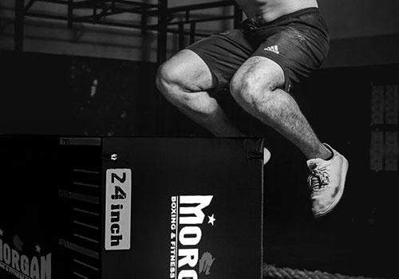

Crossfit Workouts
What is Crossfit?
A form of high intensity interval training, CrossFit
is a strength and conditioning workout that
is made up of functional movement performed
at a high intensity level.
These movements are actions that you perform in your
day-to-day life, like squatting, pulling, pushing etc.
Many workouts feature variations of squats, push-ups,
and weight lifting that last for predetermined amounts
of time to help build muscles. This varies from a
traditional workout that may tell you how many reps
to do over any period of time.
Common Crossfit Workouts:
Helen
3 rounds for time:
- 400m Run
- 21 Kettlebell Swings (55 lbs., men; 35 lbs., women)
- 12 Pullups
FRAN
21-15-9 reps of:
- Barbell Thrusters (95 lbs., men; 65 lbs., women)
- Pullups
Cindy
20 minutes, as many rounds as possible (AMRAP)
- 5 Pullups
- 10 Pushups, Hand Release
- 15 Air Squats
Murph
For time:
- 1 Mile
- 100 Pullups
- 200 Pushups
- 300 Air Squats
- 1 Mile
Annie
50-40-30-20-10 for time:
- Double-unders
- Situps
Jackie
For time:
- 1,000m Row
- 50 Thrusters (45 lbs., men; 35 lbs., women)
- 30 Pullups
Angie
For time:
- 100 Pullups
- 100 Pushups
- 100 Situps
- 100 Squats